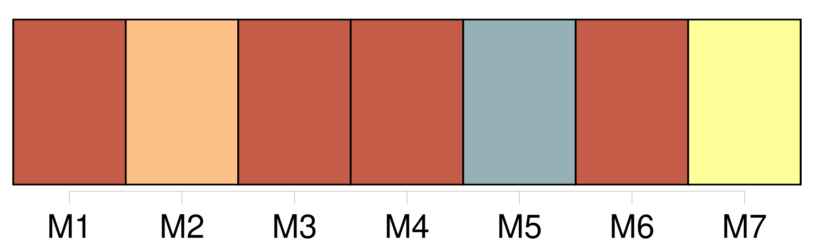
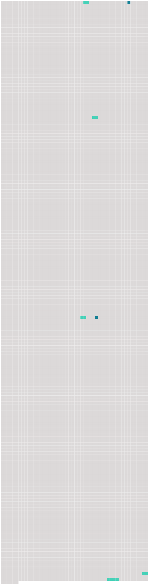

Longueur nb maillons : 7 mentions |
  |
» [68 phrases] Puis, ce que l’ abbé Sérapion m’ avait dit des artifices du diable me revenait en mémoire ; l’ étrangeté de l’ aventure, la beauté surnaturelle de Clarimonde, l’ éclat phosphorique de [ses yeux] , l’ impression brûlante de sa main, le trouble où elle m’ avait jeté, le changement subit qui s’ était opéré en moi, ma piété évanouie en un instant, tout cela prouvait clairement la présence du diable, et cette main satinée n’ était peut-être que le gant dont il avait recouvert sa griffe. [109 phrases] un léger souffle se mêla à mon souffle, et la bouche de Clarimonde répondit à la pression de la mienne : [ses yeux] s’ ouvrirent et [reprirent] un peu d’ éclat, elle fit un soupir, et, décroisant ses bras, elle les passa derrière mon cou avec un air de ravissement ineffable. [172 phrases] [Ses yeux] s’ éclairèrent, sa physionomie prit une expression de joie féroce et sauvage que je ne lui avais jamais vue. [1 phrases] Elle avalait le sang par petites gorgées, lentement et précieusement, comme un gourmet qui savoure un vin de Xérès ou de Syracuse ; elle clignait [les yeux à demi] , et la pupille de ses prunelles vertes était devenue oblongue au lieu de ronde. |
 |
La ressource peut être téléchargée sur la page Ortolang
Si vous avez des questions ou vous voyez des erreurs, merci d'envoyer un mail à silvia.federzoni89@gmail.com
Site développé par S. Federzoni (contact)